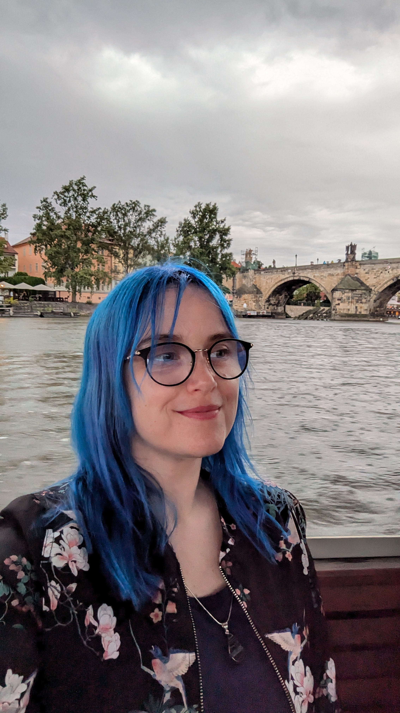

MJ Clemente.
UX Writer + Content Designer + Web developer + Copywriter + Content Strategist
Llevo años ayudando a productos digitales a comunicar mejor. Empecé en agencias creativas como copywriter y de ahí di el salto al mundo del UX y al digital. Desde entonces, he construido buena parte del ecosistema web de Holded: desde la arquitectura hasta el último microtexto.
Me muevo bien entre la estrategia, la ideación y la ejecución. Puedo entrar en una reunión, entender el reto y salir con un plan de contenido. Y luego ejecutarlo, claro.
Libero tiempo de hacer tareas mecánicas usando un stack avanzado de IA para acelerar la investigación, prototipar microcopy y resolver desafíos técnicos. Así puedo centrarme en trabajar la resolución de problemas, la creatividad y el toque humano.
Lo que aporto a tu proyecto
- * Arquitectura del lenguaje: No relleno cajas con texto; diseño la lógica de la información para que el usuario siempre sepa dónde está y qué tiene que hacer.
- * Visión de producto y Growth: Entiendo que cada palabra debe mover una métrica. He convertido funcionalidades complejas en narrativas de producto que atraen y retienen clientes.
- * Autonomía técnica: Domino Webflow, Strapi y la lógica de CMS dinámicos, lo que me permite iterar rápido y reducir la brecha entre la idea y el lanzamiento.
Habilidades
UX Writing · Microcopy · Voice & Tone · Style Guides · Web Copy · Product Copy · Instructional Copy · Brand Voice · Arquitectura de contenido · Content Strategy · Webflow · Strapi · IA aplicada
Áreas en las que he trabajado
SaaS · Finanzas · Start-ups · Emprendimiento · Acción social · Retail · Fintech · Consumo · Cultura
Clientes
Holded · Unilever · IKEA · Coca-Cola Group · Iberdrola · L'Oreal
